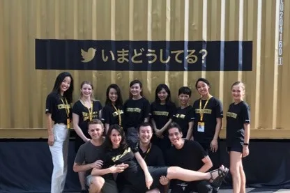

Tokyo← Inbound
Dior cosmetics global launch
Global launch at Grand Hyatt Tokyo with a VIP dinner at Trunk Hotel, produced via Luxury Makers.
Tokyo← Inbound
Tencent World Camp
Incentive for 100+ VIP attendees: event production, corporate visits, visa and transport arrangement.
Tokyo← Inbound
Kansai Nerolac incentive
Hotel incentive event for 300 guests from India's Kansai Nerolac Paints.
Tokyo← Inbound
SHU UEMURA crafted in Japan
KOLs from across Asia at a series of workshops and events in Tokyo for a product launch.
Tokyo← Inbound
Thailand Connect
MICE promotion and cultural welcome for 100 travel media guests, for the Thailand Convention & Exhibition Bureau.
Tokyo← Inbound
Festival Indonesia
Appointed organizer for the Embassy of Indonesia's 60th anniversary festival of Japan–Indonesia relations in Hibiya Park.
TokyoStaffing
Japan Mobility Show 2023
More than 80 bilingual hosts and models cast, trained and managed across exhibitor stands.
JapanStaffing
Sports hospitality
Through JLE JAPAN, our joint venture with UK-based JLE Staffing & Project Management, around 1,000 bilingual staff ran stadium hospitality areas at Rugby World Cup 2019 and Tokyo 2020.

TokyoStaffing
Bilingual event staffing
Bilingual hosts, models and promoters for events and exhibitions, cast, briefed and managed by our team.
Hong KongOutbound →
Fukuoka Prefecture PR
Tourism and product promotion for Fukuoka Prefecture at a Hong Kong shopping mall.
Hong KongOutbound →
Snoopy Japanesque
Project and production management for the first overseas edition, at Harbour City.